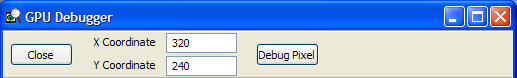

PIX GPU Debugger
The GPU Debugger enables the user to see everything that contributes to a pixel getting rendered or not rendered on the screen. It has three main components:
- Pixel History. The Pixel History window shows each PIX event that effects a selected pixel and serves as a jumping point to debugging pixel shaders, vertex shaders, and meshes.
- Pixel Shader Debugger. The Pixel Shader Debugger shows the pixel shader used to render a selected pixel.
- Vertex Shader Debugger. The Vertex Shader Debugger shows the vertex shader used to render a selected vertex.
- Mesh Debugger. The Mesh Debugger shows the rendered mesh used when making a DrawXXXX call.
Using the GPU Debugger
To use the GPU Debugger and its components, the user must:
- Capture the CPU and Pushbuffer timing information (CTRL+R.)
- Be actively running the analysis application on the Xbox Console (CTRL+B.)
The user can then launch the debugger in one of two ways:
If the user launches the debugger by clicking on the main menu bar or by selecting Start Debugging from the File menu, the main GPU debugger will appear:

The user will need to enter the coordinates of the pixel he or she is interested in and click Debug Pixel. The user will then see the complete Pixel History for the selected pixel.
- Alternatively, the user can launch the debugger by right clicking on a desired pixel in the Render Target view of the Images Window.